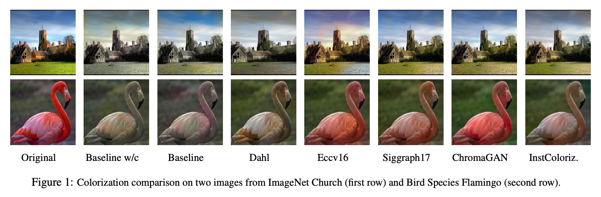
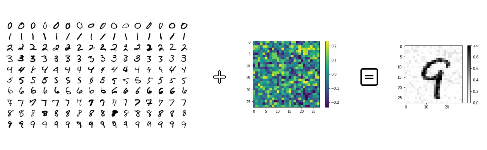

ChiaraBi
Software Developer | Data Science MS student
EU
Skills
Machine Learning
Python
Git
Languages
Italian
English
Spanish
Projects
Sentiment Analysis, Emotion Recognition and Hate Speech Detection on English tweets
Jul 2022
Natural Language Processing tasks have been widely studied in the context of big corpora, but, when applied to social media content, they have been proven to be harder. This is mainly due to the following reasons:
- Social media have a high-paced, conversational and idiosyncratic nature;
- There might be restriction in the number of characters allowed (this is the case on Twitter);
- Short texts contains a limited amount of contextual cues;
The lack of a unified evaluation framework makes it hard to compare different models.
In this project I used BERTweet, a large-scale language model pretrained on English tweets, and I evaluated its performances on three different NLP tasks:
- Emotion Recognition, which consists in recognizing the emotion evoked in a text (a tweet in this case);
- Hate Speech Detection, which consists in understanding whether a tweet is hateful or not towards certain target communities;
- Sentiment Analysis, i.e. the task of recognizing if the content of a text is positive, negative or neutral.
Automatic Image Colorization: a comparative overview
Aug 2021 - Jan 2022
The colorization of greyscale images is an ill-posed problem that was approached in different ways in literature. This project provides a comparative analysis concerning five pre-trained colorization models and a cartoonization-based baseline of our invention. The performances are assessed through both quantitative and qualitative metrics, with a final evaluation of the results with respect to image filtering.
Universal Adversarial Perturbation starring Frank-Wolfe
Jul 2021
The main goal of the project is to analyze three different Stochastic Gradient Free Frank-Wolfe algorithms for producing Universal Adversarial Perturbations. These perturbations are designed to fool advanced Convolutional Neural Networks, such as LeNet-5 and AlexNet, on the classification task performed over the MNIST dataset.
Work Experience
Software Developer
Dec 2022 - Current
App development using Flutter, an open source framework by Google for building natively compiled, multi-platform applications from a single codebase.
Education
Data Science
2020 - Current
Master's Degree
Computer Science
2012 - 2015
Bachelor's Degree